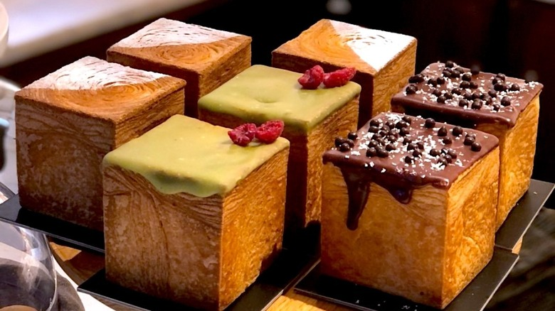

Chiffon Culture Cafe Bakery
Chiffon Culture Cafe Bakery is a charming gem that delivers both style and sweetness in every bite. Their signature chiffon cakes are unbelievably light and fluffy. From delicate fruit tarts to creamy matcha rolls, every dessert feels photo-worthy. Drinks like lavender milk tea pair perfectly with their pastries.
Rating: ⭐️⭐️⭐️⭐️⭐️
View on Map
Mr. Cool Ice Cream & Boba Tea
Mr. Cool Ice Cream & Boba Tea is a go-to spot when you're craving something cold, creamy, and totally customizable. Rolled ice cream is super rich and fun to watch. Their boba teas come with chewy pearls and great flavors like Thai tea and taro.
Rating: ⭐️⭐️⭐️⭐️
View on Map
Leave a Comment
Let us know what YOU think of these places/recipes!